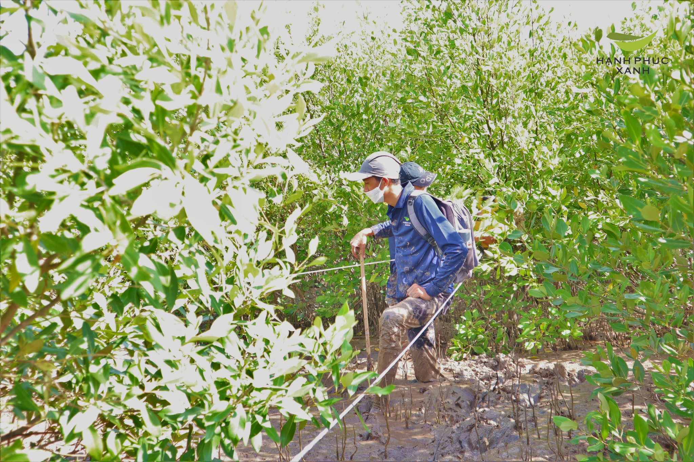
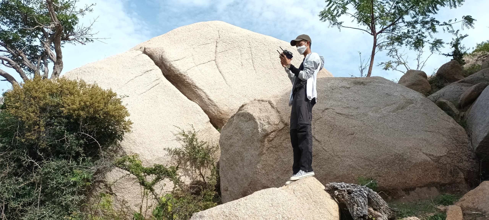
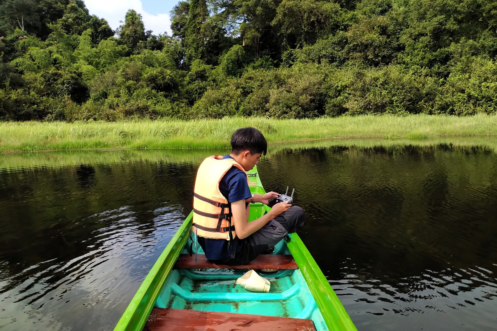
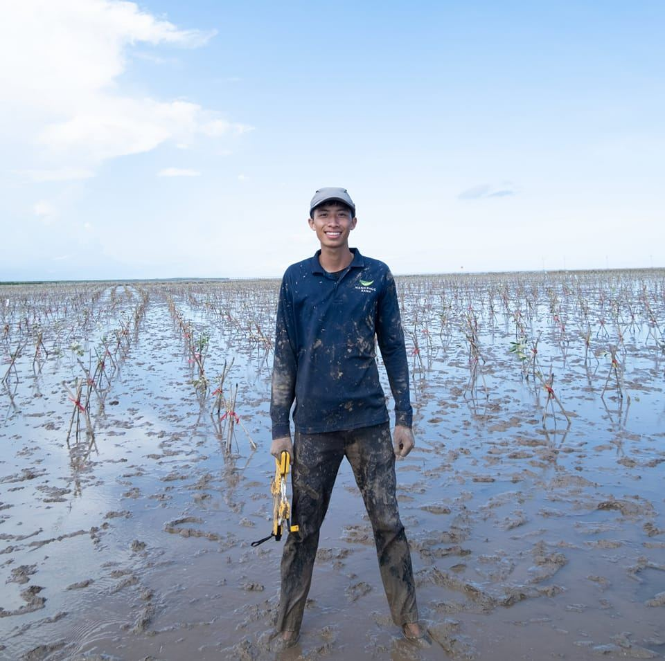

Specializing in forest management and environmental analysis, I transform geospatial data into actionable insights. I am passionate about building tools and telling stories through data visualization, with a strong commitment to daily self-improvement. Embracing modern technology, many code samples here are created with the assistance of AI. I carefully review and validate these outputs to ensure they are functional and effective for real-world tasks.
Moments from fieldwork, GIS projects, and environmental research activities

Forest Field Survey
On-site data collection & sampling

Mavic 3M Drone Operations
Multispectral image data collection

GIS & Remote Sensing Analysis
ArcGIS Pro & Google Earth Engine

Mangrove Planting & Monitoring
Biomass & carbon stock analysis
Team Collaboration
Community engagement & fieldwork
TOC Laboratory Analysis
Soil & biomass sample processing
Cách thêm ảnh nghề nghiệp của bạn
Tạo thư mục images/ trong portfolio và upload ảnh với các tên tương ứng:
profile.jpg,
field-work.jpg,
drone-work.jpg,
gis-work.jpg,
mangrove.jpg,
team.jpg,
lab-analysis.jpg.
Ảnh sẽ tự động hiển thị thay thế placeholder màu.
Explore my collection of interactive maps and geospatial visualizations
Upload Geojson and compare between Sentinel 2A vs Hansen Global Forest Loss
Upload Geojson and compare between Sentinel 2A vs Hansen Global Forest Loss
Useful code snippets and tools I've developed for geospatial analysis
Python script using Selenium to automate geojson upload and get Global Forest Watch link.
"""
GFW Automation - Một phần trong app desktop GEOJSON WORK
"""
import os
import time
import pandas as pd
from datetime import datetime
from pathlib import Path
import traceback
import threading
import requests
try:
from selenium import webdriver
from selenium.webdriver.chrome.service import Service
from selenium.webdriver.chrome.options import Options
from selenium.webdriver.common.by import By
from selenium.webdriver.support.ui import WebDriverWait
from selenium.webdriver.support import expected_conditions as EC
from selenium.common.exceptions import (
TimeoutException, NoSuchElementException,
ElementClickInterceptedException, StaleElementReferenceException,
WebDriverException
)
SELENIUM_AVAILABLE = True
except ImportError:
SELENIUM_AVAILABLE = False
# OPTIMIZED TIMING CONSTANTS
TIMING = {
'PAGE_LOAD': 8, # Truy cập link -> 8s
'POPUP_CLOSE': 5, # Đóng popup -> 5s
'FIND_UPLOAD_ZONE': 5, # Tìm upload zone -> 5s
'FILE_UPLOAD_ZOOM': 20, # Load file + zoom -> 15s (FIXED)
'FIND_SHARE_BUTTON': 5, # Tìm nút Share -> 5s
'SHARE_MODAL_LOAD': 5, # Modal load -> 5s
'COPY_LINK': 5, # Copy link -> 5s
'MODAL_CLOSE': 3, # Đóng modal -> 3s
}
class GFWAutomatorOptimized:
def __init__(self):
self.driver = None
self.cancelled = False
self.paused = False
# Thread safety
self.pause_lock = threading.Lock()
# Callbacks
self.progress_callback = None
self.log_callback = None
self.stats_callback = None
# Statistics
self.stats = {
'total': 0,
'processed': 0,
'success': 0,
'failed': 0,
'network_errors': 0,
'retry_count': 0,
'step_timings': {} # Track timing cho mỗi step
}
# Excel handling
self.excel_file = None
self.pending_results = []
self.save_frequency = 3
def set_callbacks(self, progress_callback=None, log_callback=None, stats_callback=None):
"""Thiết lập callback functions"""
self.progress_callback = progress_callback
self.log_callback = log_callback
self.stats_callback = stats_callback
def cancel(self):
"""Hủy bỏ quá trình"""
self.cancelled = True
self.log("Đã nhận lệnh hủy bỏ...")
if self.pending_results:
self.save_pending_results()
if self.driver:
try:
self.driver.quit()
self.log("Đã đóng ChromeDriver")
except:
pass
def pause(self):
"""Tạm dừng"""
with self.pause_lock:
self.paused = True
self.log("Automation đã tạm dừng")
def resume(self):
"""Tiếp tục"""
with self.pause_lock:
self.paused = False
self.log("Automation tiếp tục")
def is_paused(self):
"""Kiểm tra có đang tạm dừng không"""
with self.pause_lock:
return self.paused
def log(self, message):
"""Ghi log"""
if self.log_callback:
self.log_callback(message)
else:
print(message)
def update_progress(self, current, total, message="Đang xử lý..."):
"""Cập nhật tiến trình"""
if self.progress_callback:
self.progress_callback(current, total, message)
def update_stats(self):
"""Cập nhật thống kê"""
if self.stats_callback:
self.stats_callback(self.stats)
def check_internet_connection(self):
"""Kiểm tra kết nối internet"""
try:
response = requests.get('https://www.globalforestwatch.org', timeout=10)
return response.status_code == 200
except:
return False
def wait_for_network_recovery(self, max_wait_time=60):
"""Đợi mạng phục hồi - giảm timeout"""
self.log("Kiểm tra kết nối mạng...")
start_time = time.time()
while time.time() - start_time < max_wait_time:
if self.cancelled:
return False
if self.check_internet_connection():
self.log("Kết nối mạng đã khôi phục")
return True
self.log("⏳ Chờ kết nối mạng... (thử lại sau 5s)")
time.sleep(5) # Giảm từ 10s xuống 5s
self.log("Timeout chờ kết nối mạng")
return False
def wait_for_pause(self):
"""Chờ khi bị tạm dừng"""
while True:
if self.cancelled:
break
with self.pause_lock:
if not self.paused:
break
self.log("Đang tạm dừng...")
time.sleep(1)
def time_step(self, step_name, target_time, func, *args, **kwargs):
"""Execute function với timing tracking"""
start_time = time.time()
self.log(f"{step_name} (target: {target_time}s)")
try:
result = func(*args, **kwargs)
duration = time.time() - start_time
# Track timing
if step_name not in self.stats['step_timings']:
self.stats['step_timings'][step_name] = []
self.stats['step_timings'][step_name].append(duration)
status = "O" if duration <= target_time * 1.2 else "X"
self.log(f"{status} {step_name} completed in {duration:.1f}s")
return result
except Exception as e:
duration = time.time() - start_time
self.log(f"{step_name} failed after {duration:.1f}s: {str(e)}")
raise
def setup_driver(self, chromedriver_path, headless=False):
"""Thiết lập Chrome WebDriver tối ưu tốc độ"""
if not SELENIUM_AVAILABLE:
return {'success': False, 'error': 'Selenium không có sẵn'}
try:
service = Service(chromedriver_path)
options = Options()
# SPEED OPTIMIZED OPTIONS
options.add_argument('--no-sandbox')
options.add_argument('--disable-dev-shm-usage')
options.add_argument('--disable-gpu')
options.add_argument('--disable-extensions')
options.add_argument('--disable-plugins')
options.add_argument('--disable-images') # Tắt ảnh
options.add_argument('--disable-javascript') # Tắt JS không cần thiết
options.add_argument('--disable-css') # Tắt CSS không cần thiết
options.add_argument('--aggressive-cache-discard')
options.add_argument('--memory-pressure-off')
options.add_argument('--disable-background-timer-throttling')
options.add_argument('--disable-backgrounding-occluded-windows')
options.add_argument('--disable-renderer-backgrounding')
# Network optimization
options.add_argument('--disable-background-networking')
options.add_argument('--disable-default-apps')
options.add_argument('--disable-sync')
if headless:
options.add_argument('--headless')
# Shorter timeouts
self.driver = webdriver.Chrome(service=service, options=options)
self.driver.set_page_load_timeout(30) # Giảm từ 120s xuống 30s
self.driver.implicitly_wait(3) # Giảm từ 10s xuống 3s
return {'success': True, 'message': 'ChromeDriver khởi động thành công'}
except Exception as e:
return {'success': False, 'error': f'Lỗi khởi động ChromeDriver: {str(e)}'}
def step1_navigate_to_gfw(self):
"""BƯỚC 1: Truy cập link chỉ định (8s)"""
gfw_url = 'https://www.globalforestwatch.org/map/?analysis=eyJzaG93RHJhdyI6dHJ1ZX0%3D&mainMap=eyJzaG93QW5hbHlzaXMiOnRydWV9&map=eyJjZW50ZXIiOnsibGF0IjoxMC45MjA4NTAzODQ0OTQwMzUsImxuZyI6MTA3LjMwMjQ1MjkwMDgwNTYyfSwiem9vbSI6OS40MjQ1ODkzMTYzMjQ0MTcsImRhdGFzZXRzIjpbeyJkYXRhc2V0IjoicG9saXRpY2FsLWJvdW5kYXJpZXMiLCJsYXllcnMiOlsiZGlzcHV0ZWQtcG9saXRpY2FsLWJvdW5kYXJpZXMiLCJwb2xpdGljYWwtYm91bmRhcmllcyJdLCJvcGFjaXR5IjoxLCJ2aXNpYmlsaXR5Ijp0cnVlfSx7ImRhdGFzZXQiOiJ0cmVlLWNvdmVyLWxvc3MiLCJvcGFjaXR5IjowLjU1LCJ2aXNpYmlsaXR5Ijp0cnVlLCJsYXllcnMiOlsidHJlZS1jb3Zlci1sb3NzIl0sInRpbWVsaW5lUGFyYW1zIjp7InN0YXJ0RGF0ZSI6IjIwMjEtMDEtMDEiLCJlbmREYXRlIjoiMjAyNC0xMi0zMSIsInRyaW1FbmREYXRlIjoiMjAyNC0xMi0zMSJ9fSx7ImRhdGFzZXQiOiJ0cmVlLXBsYW50YXRpb25zIiwib3BhY2l0eSI6MSwidmlzaWJpbGl0eSI6dHJ1ZSwibGF5ZXJzIjpbInRyZWUtcGxhbnRhdGlvbnMiXX1dfQ%3D%3D&mapPrompts=eyJvcGVuIjp0cnVlLCJzdGVwc0tleSI6InN1YnNjcmliZVRvQXJlYSJ9'
self.driver.get(gfw_url)
time.sleep(TIMING['PAGE_LOAD'])
return True
def step2_close_popup(self):
"""BƯỚC 2: Đóng popup (5s)"""
close_selectors = [
"//button[contains(@aria-label, 'close')]",
"//button[contains(@aria-label, 'Close')]",
"//button[contains(@class, 'close')]",
"//button[contains(text(), '×')]",
"//div[contains(@class, 'close')][@role='button']"
]
for selector in close_selectors:
try:
close_button = WebDriverWait(self.driver, 2).until(
EC.element_to_be_clickable((By.XPATH, selector))
)
self.driver.execute_script("arguments[0].click();", close_button)
time.sleep(1) # Quick wait after close
return True
except:
continue
# ESC fallback
try:
from selenium.webdriver.common.keys import Keys
self.driver.find_element(By.TAG_NAME, 'body').send_keys(Keys.ESCAPE)
time.sleep(1)
return True
except:
pass
return True # Continue even if no popup
def step3_find_upload_zone(self):
"""BƯỚC 3: Tìm upload zone (5s)"""
upload_selectors = [
(By.ID, "upload-dropzone"),
(By.XPATH, "//div[contains(@class, 'draw-menu-input')][@id='upload-dropzone']"),
(By.XPATH, "//div[contains(@class, 'upload-dropzone')]"),
(By.XPATH, "//div[contains(@class, 'dropzone')]")
]
for selector_type, selector_value in upload_selectors:
try:
upload_element = WebDriverWait(self.driver, 2).until(
EC.presence_of_element_located((selector_type, selector_value))
)
return upload_element
except:
continue
raise Exception("Không tìm thấy upload zone")
def step4_upload_and_wait_zoom(self, file_path, upload_element):
"""BƯỚC 4: Upload file và chờ zoom (15s cố định)"""
# Find file input
file_input = upload_element.find_element(By.CSS_SELECTOR, 'input[type="file"]')
# Upload file
file_input.send_keys(file_path)
self.log(f"File uploaded: {os.path.basename(file_path)}")
# FIXED 15 SECOND WAIT - không check gì cả, chỉ đợi
self.log("Chờ cố định 15s để GFW load và zoom...")
for i in range(15):
if self.cancelled:
return False
self.wait_for_pause()
time.sleep(1)
return True
def step5_find_share_button(self):
"""BƯỚC 5: Tìm nút Share (5s)"""
share_selectors = [
"//*[@id='map-share-button']/div",
"//button[contains(@class, 'share')]",
"//div[contains(@class, 'share-button')]",
"//button[contains(text(), 'Share')]"
]
for selector in share_selectors:
try:
share_button = WebDriverWait(self.driver, 2).until(
EC.element_to_be_clickable((By.XPATH, selector))
)
return share_button
except:
continue
raise Exception("Không tìm thấy nút Share")
def step6_get_share_link(self, share_button):
"""BƯỚC 6: Click Share, đợi modal, copy link (10s total)"""
# Click share button
self.driver.execute_script("arguments[0].click();", share_button)
# Wait for modal - 5s
modal_selectors = [
"//div[contains(@class, 'modal-content')]//div[contains(@class, 'c-share')]",
"//div[contains(@class, 'share-modal')]"
]
modal_found = False
for selector in modal_selectors:
try:
WebDriverWait(self.driver, 2).until(
EC.visibility_of_element_located((By.XPATH, selector))
)
modal_found = True
break
except:
continue
if not modal_found:
raise Exception("Share modal không xuất hiện")
# Wait for modal content to load
time.sleep(TIMING['SHARE_MODAL_LOAD'])
# Get share link - 5s
input_selectors = [
"//div[contains(@class, 'input-container')]//input[@type='text']",
"//input[contains(@class, 'share-input')]",
"//input[contains(@value, 'gfw.global')]"
]
share_link = None
for selector in input_selectors:
try:
share_input = WebDriverWait(self.driver, 2).until(
EC.presence_of_element_located((By.XPATH, selector))
)
share_link = share_input.get_attribute('value')
if share_link and share_link.startswith("https://gfw.global/"):
break
except:
continue
if not share_link:
raise Exception("Không lấy được share link")
# Optional: Click copy button
try:
copy_button = WebDriverWait(self.driver, 2).until(
EC.element_to_be_clickable((By.XPATH, "//button[@id='button']//div[contains(text(), 'COPY')]"))
)
self.driver.execute_script("arguments[0].click();", copy_button)
except:
pass # Not critical
return share_link
def step7_close_modal(self):
"""BƯỚC 7: Đóng modal (3s)"""
close_selectors = [
"//button[@aria-label='close']",
"//button[contains(@class, 'close')]",
"//div[contains(@class, 'close')][@role='button']"
]
for selector in close_selectors:
try:
close_button = WebDriverWait(self.driver, 1).until(
EC.element_to_be_clickable((By.XPATH, selector))
)
self.driver.execute_script("arguments[0].click();", close_button)
time.sleep(1)
return True
except:
continue
return True # Continue even if can't close
def upload_geojson_and_get_link_optimized(self, file_path, max_retries=2):
"""Optimized upload với fixed timing cho mỗi bước"""
for attempt in range(max_retries):
if self.cancelled:
return None
try:
self.log(f"📄 Attempt {attempt + 1}/{max_retries}: {os.path.basename(file_path)}")
# BƯỚC 1: Navigate (8s)
self.time_step("Navigate to GFW", TIMING['PAGE_LOAD'],
self.step1_navigate_to_gfw)
self.wait_for_pause()
# BƯỚC 2: Close popup (5s)
self.time_step("Close Popup", TIMING['POPUP_CLOSE'],
self.step2_close_popup)
# BƯỚC 3: Find upload zone (5s)
upload_element = self.time_step("Find Upload Zone", TIMING['FIND_UPLOAD_ZONE'],
self.step3_find_upload_zone)
# BƯỚC 4: Upload + zoom wait (15s cố định)
self.time_step("Upload and Zoom Wait", TIMING['FILE_UPLOAD_ZOOM'],
self.step4_upload_and_wait_zoom, file_path, upload_element)
self.wait_for_pause()
# BƯỚC 5: Find share button (5s)
share_button = self.time_step("Find Share Button", TIMING['FIND_SHARE_BUTTON'],
self.step5_find_share_button)
# BƯỚC 6: Get share link (10s total)
share_link = self.time_step("Get Share Link", TIMING['SHARE_MODAL_LOAD'] + TIMING['COPY_LINK'],
self.step6_get_share_link, share_button)
# BƯỚC 7: Close modal (3s)
self.time_step("Close Modal", TIMING['MODAL_CLOSE'],
self.step7_close_modal)
self.log(f"Success: {share_link}")
return share_link
except WebDriverException as e:
if "net::" in str(e):
self.log(f"Network error: {str(e)}")
if self.wait_for_network_recovery(30): # Shorter recovery time
continue
else:
return None
else:
self.log(f"WebDriver error attempt {attempt + 1}: {str(e)}")
except Exception as e:
self.log(f"Error attempt {attempt + 1}: {str(e)}")
if attempt < max_retries - 1:
self.log(f"Waiting 5s before retry...")
time.sleep(5) # Shorter retry delay
return None
def save_pending_results(self):
"""Lưu kết quả vào Excel - simplified"""
if not self.pending_results or not self.excel_file:
return
try:
if os.path.exists(self.excel_file):
existing_df = pd.read_excel(self.excel_file)
else:
existing_df = pd.DataFrame(columns=['GEOJSON Filename', 'Share Link', 'Timestamp', 'Status'])
new_df = pd.DataFrame(self.pending_results)
combined_df = pd.concat([existing_df, new_df], ignore_index=True)
os.makedirs(os.path.dirname(self.excel_file), exist_ok=True)
combined_df.to_excel(self.excel_file, index=False)
self.log(f"Đã lưu {len(combined_df)} records")
self.pending_results.clear()
except Exception as e:
self.log(f"Lỗi lưu Excel: {str(e)}")
def add_result(self, filename, share_link, status):
"""Thêm kết quả"""
timestamp = datetime.now().strftime("%Y-%m-%d %H:%M:%S")
result = {
'GEOJSON Filename': filename,
'Share Link': share_link,
'Timestamp': timestamp,
'Status': status
}
self.pending_results.append(result)
if len(self.pending_results) >= self.save_frequency:
self.save_pending_results()
def process_geojson_folder(self, geojson_folder, excel_file, chromedriver_path, headless=False, timeout=30, retry_failed=True):
"""Process folder với optimized timing"""
if not SELENIUM_AVAILABLE:
return {'success': False, 'error': 'Selenium không có sẵn'}
self.cancelled = False
self.paused = False
self.excel_file = excel_file
self.pending_results = []
result = {
'success': False,
'total_processed': 0,
'success_count': 0,
'failed_count': 0,
'excel_file': excel_file,
'error': None,
'average_time_per_file': 0
}
try:
# Check network
if not self.check_internet_connection():
result['error'] = 'Không có kết nối internet'
return result
# Setup driver
self.log("Đang khởi động ChromeDriver...")
driver_result = self.setup_driver(chromedriver_path, headless)
if not driver_result['success']:
result['error'] = driver_result['error']
return result
self.log("ChromeDriver sẵn sàng")
# Find files
geojson_files = list(Path(geojson_folder).glob("*.geojson"))
if not geojson_files:
result['error'] = "Không tìm thấy file GeoJSON"
return result
total_files = len(geojson_files)
self.stats['total'] = total_files
self.log(f"Tìm thấy {total_files} file GeoJSON")
start_time = time.time()
# Process files
for i, geojson_file in enumerate(geojson_files):
if self.cancelled:
break
self.wait_for_pause()
filename = geojson_file.name
self.update_progress(i, total_files, f"Đang xử lý: {filename}")
file_start_time = time.time()
try:
share_link = self.upload_geojson_and_get_link_optimized(str(geojson_file))
if share_link:
status = "SUCCESS"
self.stats['success'] += 1
self.add_result(filename, share_link, status)
file_duration = time.time() - file_start_time
self.log(f"{filename}: THÀNH CÔNG ({file_duration:.1f}s)")
else:
status = "FAILED"
self.stats['failed'] += 1
self.add_result(filename, "Failed to get link", status)
self.log(f"{filename}: THẤT BẠI")
self.stats['processed'] += 1
self.update_stats()
except Exception as e:
self.log(f"Lỗi {filename}: {str(e)}")
self.add_result(filename, f"Error: {str(e)}", "ERROR")
self.stats['failed'] += 1
self.stats['processed'] += 1
self.update_stats()
# Minimal delay between files
if not self.cancelled and i < total_files - 1:
time.sleep(2) # Very short delay
# Save remaining results
if self.pending_results:
self.save_pending_results()
# Calculate stats
total_time = time.time() - start_time
avg_time = total_time / self.stats['processed'] if self.stats['processed'] > 0 else 0
result['success'] = True
result['total_processed'] = self.stats['processed']
result['success_count'] = self.stats['success']
result['failed_count'] = self.stats['failed']
result['average_time_per_file'] = avg_time
self.log(f"\nTHỐNG KÊ CUỐI:")
self.log(f"Thành công: {self.stats['success']}/{total_files}")
self.log(f"⏱Thời gian trung bình: {avg_time:.1f}s/file")
self.log(f"Tổng thời gian: {total_time:.1f}s")
if not self.cancelled:
self.update_progress(total_files, total_files, "Hoàn thành!")
except Exception as e:
result['error'] = f"Lỗi: {str(e)}"
self.log(f" {result['error']}")
if self.pending_results:
self.save_pending_results()
finally:
if self.driver:
try:
self.driver.quit()
self.log("Đã đóng ChromeDriver")
except:
pass
return result
GFWAutomator = GFWAutomatorOptimized
Camera AI with YOLO Ultralytics Code sample
//Dev
Visual comparison of data according to the latest Sentinel 2A image and detected deforestation areas
// ỨNG DỤNG GEE: SWIPE SENTINEL-2 vs HANSEN FOREST LOSS 2021-2024
// Tác giả: Ngô Văn Bắc
// Mô tả: So sánh ảnh vệ tinh Sentinel-2 và mất rừng Hansen 2021-2024
var app = {};
app.SENTINEL_COLLECTION = 'COPERNICUS/S2_SR_HARMONIZED';
app.HANSEN_IMAGE = 'UMD/hansen/global_forest_change_2024_v1_12';
app.SENTINEL_VIS = {
bands: ['B4', 'B3', 'B2'],
min: 0,
max: 3000,
gamma: 1.4
};
app.HANSEN_VIS = {
lossYear: {
bands: ['lossyear'],
min: 21,
max: 24,
palette: ['yellow', 'orange', 'red', 'darkred']
}
};
app.DEFAULT_CENTER = {lon: 107.191026, lat: 10.939236, zoom: 10};
app.state = {
geojson: null,
geojsonBounds: null,
startDate: '2025-01-01',
endDate: '2025-05-31',
maxCloud: 30,
imageIds: [],
hansenPeriod: '2021-2024'
};
app.HANSEN_PERIODS = {
'2000-2020': {min: 0, max: 20, label: '2000-2020 (Lịch sử)'},
'2021-2024': {min: 21, max: 24, label: '2021-2024 (Gần đây)'},
'2021': {min: 21, max: 21, label: '2021'},
'2022': {min: 22, max: 22, label: '2022'},
'2023': {min: 23, max: 23, label: '2023'},
'2024': {min: 24, max: 24, label: '2024'}
};
app.removeLayerByName = function(map, name) {
var layers = map.layers();
for (var i = layers.length() - 1; i >= 0; i--) {
var layer = layers.get(i);
if (layer.getName() === name) {
layers.remove(layer);
}
}
};
app.parseDateFromImageId = function(imageId) {
// imageId format: "20250106T031121_20250106T032301_T48PYT"
// Lấy phần đầu: YYYYMMDD
if (!imageId || imageId.length < 8) return 'N/A';
try {
// Extract YYYYMMDD from start of imageId
var dateStr = imageId.substring(0, 8);
var year = dateStr.substring(0, 4);
var month = dateStr.substring(4, 6);
var day = dateStr.substring(6, 8);
// Return format: YYYY-MM-DD
return year + '-' + month + '-' + day;
} catch (e) {
return 'N/A';
}
};
app.displayImageMetadata = function(image, isComposite, imageId) {
if (isComposite) {
// Composite metadata
var info = 'Ảnh tổng hợp (Composite)\n' +
'Kỳ: ' + app.state.startDate + ' đến ' + app.state.endDate + '\n' +
'Số ảnh: ' + app.state.imageIds.length + ' ảnh\n' +
'Mây: < ' + app.state.maxCloud + '%\n' +
'Phương pháp: Median (giảm mây/nhiễu)';
app.imageMetadataLabel.setValue(info);
app.imageMetadataLabel.style().set({shown: true, color: '333'});
} else {
// Single image metadata
app.imageMetadataLabel.setValue('⏳ Đang tải thông tin ảnh...');
app.imageMetadataLabel.style().set({shown: true, color: 'blue'});
// Parse date from imageId first (synchronous)
var captureDate = app.parseDateFromImageId(imageId);
// Get other properties (asynchronous)
var props = image.toDictionary();
props.evaluate(function(p) {
if (!p) {
// Nếu không lấy được properties, vẫn hiển thị ngày từ imageId
var info = 'Ảnh vệ tinh đơn lẻ\n' +
'Vệ tinh: Sentinel-2\n' +
'Ngày chụp: ' + captureDate + '\n' +
'Mây: N/A\n' +
'Tile: N/A\n' +
'Ảnh thực (không tổng hợp)';
app.imageMetadataLabel.setValue(info);
app.imageMetadataLabel.style().set({shown: true, color: '333'});
return;
}
// Extract other info
var cloudPct = p['CLOUDY_PIXEL_PERCENTAGE'];
var spacecraft = p['SPACECRAFT_NAME'] || 'Sentinel-2';
var mgrs = p['MGRS_TILE'] || imageId.split('_')[2] || 'N/A';
// Format display with parsed date
var info = 'Ảnh vệ tinh đơn lẻ\n' +
'Vệ tinh: ' + spacecraft + '\n' +
'Ngày chụp: ' + captureDate + '\n' +
'Mây: ' + (cloudPct ? cloudPct.toFixed(1) + '%' : 'N/A') + '\n' +
'Tile: ' + mgrs + '\n' +
'Ảnh thực (không tổng hợp)';
app.imageMetadataLabel.setValue(info);
app.imageMetadataLabel.style().set({shown: true, color: '333'});
});
}
};
app.createMaps = function() {
app.leftMap = ui.Map();
app.leftMap.setControlVisibility({all: false, zoomControl: true});
app.leftMap.setOptions('HYBRID');
app.rightMap = ui.Map();
app.rightMap.setControlVisibility({all: true});
app.rightMap.setOptions('SATELLITE');
app.mapLinker = ui.Map.Linker([app.leftMap, app.rightMap]);
app.leftMap.setCenter(
app.DEFAULT_CENTER.lon,
app.DEFAULT_CENTER.lat,
app.DEFAULT_CENTER.zoom
);
app.leftMap.add(ui.Label({
value: '◄ Sentinel-2 (Toàn cảnh)',
style: {
position: 'top-center',
padding: '5px',
backgroundColor: 'rgba(255,255,255,0.8)',
fontWeight: 'bold'
}
}));
app.rightMap.add(ui.Label({
value: 'Hansen Mất Rừng (Toàn cảnh) ►',
style: {
position: 'top-center',
padding: '5px',
backgroundColor: 'rgba(255,255,255,0.8)',
fontWeight: 'bold'
}
}));
};
app.addGeoJSONBoundary = function() {
if (!app.state.geojson) return;
app.removeLayerByName(app.leftMap, 'GeoJSON Boundary');
app.removeLayerByName(app.rightMap, 'GeoJSON Boundary');
var outline = ee.Image().byte().paint({
featureCollection: app.state.geojson,
color: 1,
width: 1
});
app.leftMap.addLayer(outline, {palette: ['00FFFF']}, 'GeoJSON Boundary');
app.rightMap.addLayer(outline, {palette: ['00FFFF']}, 'GeoJSON Boundary');
};
app.loadGeoJSON = function() {
var jsonText = app.geojsonTextbox.getValue();
if (!jsonText || jsonText.trim() === '') {
app.geojsonStatus.setValue('⚠️ Vui lòng dán GeoJSON');
app.geojsonStatus.style().set('color', 'orange');
return;
}
try {
var geojsonObj = JSON.parse(jsonText);
if (geojsonObj.features) {
geojsonObj.features = geojsonObj.features.map(function(feature, index) {
var props = feature.properties || {};
delete props['system:index'];
delete feature.id;
props.featureId = 'feature_' + index;
feature.properties = props;
return feature;
});
}
app.state.geojson = ee.FeatureCollection(geojsonObj);
app.state.geojsonBounds = app.state.geojson.geometry().bounds();
app.addGeoJSONBoundary();
app.leftMap.centerObject(app.state.geojson, 12);
app.geojsonStatus.setValue('✓ Đã tải ' +
app.state.geojson.size().getInfo() + ' đối tượng');
app.geojsonStatus.style().set('color', 'green');
app.geojsonClearBtn.setDisabled(false);
} catch (e) {
app.geojsonStatus.setValue('✗ Lỗi: ' + e.message);
app.geojsonStatus.style().set('color', 'red');
}
};
app.clearGeoJSON = function() {
app.state.geojson = null;
app.state.geojsonBounds = null;
app.geojsonTextbox.setValue('');
app.geojsonStatus.setValue('');
app.geojsonClearBtn.setDisabled(true);
app.removeLayerByName(app.leftMap, 'GeoJSON Boundary');
app.removeLayerByName(app.rightMap, 'GeoJSON Boundary');
};
app.loadSentinel = function() {
app.sentinelStatus.setValue('⏳ Đang tìm ảnh...');
app.sentinelStatus.style().set('color', 'blue');
app.state.startDate = app.startDateBox.getValue();
app.state.endDate = app.endDateBox.getValue();
var collection = ee.ImageCollection(app.SENTINEL_COLLECTION)
.filterDate(app.state.startDate, app.state.endDate)
.filter(ee.Filter.lt('CLOUDY_PIXEL_PERCENTAGE', app.state.maxCloud));
if (app.state.geojson) {
collection = collection.filterBounds(app.state.geojson);
} else {
collection = collection.filterBounds(app.leftMap.getBounds(true));
}
var computedIds = collection.limit(50)
.reduceColumns(ee.Reducer.toList(), ['system:index'])
.get('list');
computedIds.evaluate(function(ids) {
if (!ids || ids.length === 0) {
app.sentinelStatus.setValue('⚠️ Không tìm thấy ảnh. Thử mở rộng thời gian hoặc tăng % mây.');
app.sentinelStatus.style().set('color', 'orange');
app.imageSelector.items().reset([]);
app.imageSelector.setPlaceholder('Không có ảnh');
app.imageMetadataLabel.style().set('shown', false);
return;
}
app.state.imageIds = ids;
var composite = collection.median();
app.removeLayerByName(app.leftMap, 'Sentinel-2');
app.leftMap.addLayer(composite, app.SENTINEL_VIS, 'Sentinel-2');
app.addGeoJSONBoundary();
app.sentinelStatus.setValue('✓ Đã tải composite từ ' + ids.length + ' ảnh');
app.sentinelStatus.style().set('color', 'green');
app.imageSelector.items().reset(['[Composite từ ' + ids.length + ' ảnh]'].concat(ids));
app.imageSelector.setPlaceholder('Chọn ảnh...');
app.imageSelector.setValue('[Composite từ ' + ids.length + ' ảnh]', true);
// Show composite metadata
app.displayImageMetadata(composite, true, null);
});
};
app.onImageSelect = function(imageId) {
if (!imageId) return;
if (imageId.indexOf('Composite') > -1) {
var collection = ee.ImageCollection(app.SENTINEL_COLLECTION)
.filterDate(app.state.startDate, app.state.endDate)
.filter(ee.Filter.lt('CLOUDY_PIXEL_PERCENTAGE', app.state.maxCloud));
if (app.state.geojson) {
collection = collection.filterBounds(app.state.geojson);
} else {
collection = collection.filterBounds(app.leftMap.getBounds(true));
}
var composite = collection.median();
app.removeLayerByName(app.leftMap, 'Sentinel-2');
app.leftMap.addLayer(composite, app.SENTINEL_VIS, 'Sentinel-2');
app.addGeoJSONBoundary();
// Show composite metadata
app.displayImageMetadata(composite, true, null);
return;
}
var image = ee.Image(app.SENTINEL_COLLECTION + '/' + imageId);
app.removeLayerByName(app.leftMap, 'Sentinel-2');
app.leftMap.addLayer(image, app.SENTINEL_VIS, 'Sentinel-2');
app.addGeoJSONBoundary();
app.leftMap.centerObject(image.geometry(), 12);
app.displayImageMetadata(image, false, imageId);
};
app.loadHansen = function() {
var hansen = ee.Image(app.HANSEN_IMAGE);
var lossYear = hansen.select('lossyear');
var period = app.HANSEN_PERIODS[app.state.hansenPeriod];
var minYear = period.min;
var maxYear = period.max;
var lossMask = lossYear.gte(minYear).and(lossYear.lte(maxYear));
var hansenFiltered = hansen.updateMask(lossMask);
var palette;
if (maxYear - minYear > 3) {
palette = ['yellow', 'orange', 'orangered', 'red', 'darkred'];
} else {
palette = ['yellow', 'orange', 'red', 'darkred'];
}
var visParams = {
bands: ['lossyear'],
min: minYear,
max: maxYear,
palette: palette
};
app.removeLayerByName(app.rightMap, 'Hansen Loss');
app.rightMap.addLayer(hansenFiltered, visParams, 'Hansen Loss ' + app.state.hansenPeriod);
app.addGeoJSONBoundary();
var mapLabel = app.rightMap.widgets().get(0);
if (mapLabel) {
mapLabel.setValue('Hansen Mất Rừng ' + period.label + ' ►');
}
};
app.onHansenPeriodChange = function(period) {
app.state.hansenPeriod = period;
app.loadHansen();
};
app.createControlPanel = function() {
var header = ui.Panel([
ui.Label({
value: 'Sentinel-2 vs Hansen Forest Loss',
style: {fontSize: '18px', fontWeight: 'bold', margin: '10px 0'}
}),
ui.Label('Swipe để so sánh ảnh vệ tinh và mất rừng')
]);
// GeoJSON Section
app.geojsonTextbox = ui.Textbox({
placeholder: 'Dán GeoJSON minified (tùy chọn)...',
style: {stretch: 'horizontal', height: '60px'}
});
app.geojsonLoadBtn = ui.Button({
label: '📥 Tải GeoJSON',
onClick: app.loadGeoJSON,
style: {stretch: 'horizontal'}
});
app.geojsonClearBtn = ui.Button({
label: '🗑️ Xóa GeoJSON',
onClick: app.clearGeoJSON,
disabled: true,
style: {stretch: 'horizontal'}
});
app.geojsonStatus = ui.Label({
value: '',
style: {fontSize: '11px', margin: '5px 0'}
});
var geojsonSection = ui.Panel({
widgets: [
ui.Label('1. Tải GeoJSON (tùy chọn)', {fontWeight: 'bold', fontSize: '13px', margin: '10px 0 3px 0'}),
ui.Label('Border 1px cyan, không clip dữ liệu', {fontSize: '10px', color: 'gray'}),
app.geojsonTextbox,
ui.Panel([app.geojsonLoadBtn, app.geojsonClearBtn], ui.Panel.Layout.flow('horizontal')),
app.geojsonStatus
]
});
// Sentinel-2 Section
app.startDateBox = ui.Textbox({
value: app.state.startDate,
placeholder: 'YYYY-MM-DD',
style: {stretch: 'horizontal'}
});
app.endDateBox = ui.Textbox({
value: app.state.endDate,
placeholder: 'YYYY-MM-DD',
style: {stretch: 'horizontal'}
});
app.cloudLabel = ui.Label('Mây tối đa: ' + app.state.maxCloud + '%', {fontSize: '11px'});
app.cloudSlider = ui.Slider({
min: 0,
max: 100,
value: app.state.maxCloud,
step: 5,
style: {stretch: 'horizontal'},
onChange: function(value) {
app.state.maxCloud = value;
app.cloudLabel.setValue('Mây tối đa: ' + value + '%');
}
});
app.sentinelApplyBtn = ui.Button({
label: 'Tìm & Hiển thị Sentinel-2',
onClick: app.loadSentinel,
style: {stretch: 'horizontal', fontWeight: 'bold'}
});
app.sentinelStatus = ui.Label({
value: '',
style: {fontSize: '11px', margin: '5px 0'}
});
app.imageSelector = ui.Select({
items: [],
placeholder: 'Chọn ảnh sau khi tìm kiếm...',
onChange: app.onImageSelect,
style: {stretch: 'horizontal'}
});
// Image Metadata Label
app.imageMetadataLabel = ui.Label({
value: '',
style: {
fontSize: '11px',
margin: '8px 5px',
padding: '8px',
backgroundColor: 'rgba(240,248,255,0.9)',
border: '1px solid #ccc',
whiteSpace: 'pre',
fontFamily: 'monospace',
shown: false
}
});
var sentinelSection = ui.Panel({
widgets: [
ui.Label('2. Lọc Sentinel-2', {fontWeight: 'bold', fontSize: '13px', margin: '10px 0 3px 0'}),
ui.Label('Ngày bắt đầu:', {fontSize: '10px', color: 'gray'}),
app.startDateBox,
ui.Label('Ngày kết thúc:', {fontSize: '10px', color: 'gray'}),
app.endDateBox,
app.cloudLabel,
app.cloudSlider,
app.sentinelApplyBtn,
app.sentinelStatus,
ui.Label('Chọn ảnh hiển thị:', {fontSize: '10px', color: 'gray', margin: '5px 0 0 0'}),
app.imageSelector,
app.imageMetadataLabel
]
});
// Hansen Section
app.hansenPeriodSelector = ui.Select({
items: Object.keys(app.HANSEN_PERIODS).map(function(key) {
return {label: app.HANSEN_PERIODS[key].label, value: key};
}),
value: app.state.hansenPeriod,
placeholder: 'Chọn thời gian...',
onChange: app.onHansenPeriodChange,
style: {stretch: 'horizontal'}
});
var hansenSection = ui.Panel({
widgets: [
ui.Label('3. Hansen Mất Rừng', {fontWeight: 'bold', fontSize: '13px', margin: '10px 0 3px 0'}),
ui.Label('Chọn thời gian mất rừng:', {fontSize: '10px', color: 'gray'}),
app.hansenPeriodSelector,
ui.Label('Đỏ đậm = Gần đây hơn', {fontSize: '10px', color: 'darkred', margin: '5px 0 0 0'}),
ui.Label('Vàng = Cũ hơn', {fontSize: '10px', color: 'orange'}),
ui.Label('Hiển thị toàn cảnh, không clip', {fontSize: '9px', color: 'blue', margin: '3px 0'})
]
});
var mainContent = ui.Panel({
widgets: [header, geojsonSection, sentinelSection, hansenSection],
layout: ui.Panel.Layout.flow('vertical'),
style: {
padding: '5px',
stretch: 'vertical'
}
});
app.controlPanel = ui.Panel({
widgets: [mainContent],
style: {
width: '320px',
maxHeight: '95%',
padding: '0px',
position: 'top-left',
shown: true
}
});
};
app.boot = function() {
ui.root.clear();
app.createMaps();
app.splitPanel = ui.SplitPanel({
firstPanel: app.leftMap,
secondPanel: app.rightMap,
wipe: true,
style: {stretch: 'both'}
});
app.createControlPanel();
app.leftMap.add(app.controlPanel);
ui.root.add(app.splitPanel);
app.loadHansen();
print('Ứng dụng đã khởi động');
print('Swipe để so sánh Sentinel-2 (trái) và Hansen (phải)');
print('GeoJSON: Border 1px cyan, không clip dữ liệu');
print('Sentinel-2: Chọn ảnh → Xem metadata (ngày YYYY-MM-DD)');
print('Hansen: Dropdown chọn thời gian mất rừng');
};
app.boot();
Create Rubber tree disease warning map.
//Dev
SQL in vector database.
//DevCalculate spatial statistics and aggregations for forest management reporting.
//DevA showcase of my recent work in GIS, remote sensing, and geospatial development
Using Planet and ArcGIS Pro images to analyze images at 02 points in time to identify and warn of risks of forest loss detection for specific planting areas.
Survey, plan flight routes, set up parameters to collect multispectral image data. Use specialized software to build DEM, DTM, CHM to estimate biomass and accumulated carbon stocks.
Using GIS software and Python to detect. and clean potential errors in GEOJSON data.
Use Survey123 XLS Form, Field Maps, ArcGIS Online and Google App Script to deploy and manage Project tasks.
Select plots, collect field samples, preserve samples and process them before bringing them to the TOC analysis laboratory
Use Python to automate tasks like downloading and getting the link to share each geojson on Global Forest Watch. Set up UX/UI and perform testing and tweaking of AI-generated code to ensure it works well.